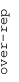
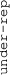

These results are also available as PDF and EPS documents.
Depending on your display resolution, scrolling or zooming may be necessary.
|  |
| 3 |
| 0 |
| -3 |
|  |
| GO:0045746 negative regulation of Notch signaling pathway | |||||||||||
| GO:0008237 metallopeptidase activity | |||||||||||
| GO:0007156 homophilic cell adhesion via plasma membrane adhesion molecules | |||||||||||
| GO:0045028 G-protein coupled purinergic nucleotide receptor activity | |||||||||||
| GO:0006937 regulation of muscle contraction | |||||||||||
| GO:0005201 extracellular matrix structural constituent | |||||||||||
| GO:0008081 phosphoric diester hydrolase activity | |||||||||||
| GO:0005164 tumor necrosis factor receptor binding | |||||||||||
| GO:0045671 negative regulation of osteoclast differentiation | |||||||||||
| GO:0045669 positive regulation of osteoblast differentiation | |||||||||||
| GO:0042626 ATPase activity, coupled to transmembrane movement of substances | |||||||||||
| GO:0005044 scavenger receptor activity | |||||||||||
| GO:0046658 anchored component of plasma membrane | |||||||||||
| GO:0005031 tumor necrosis factor-activated receptor activity | |||||||||||
| GO:0000775 chromosome, centromeric region | |||||||||||
| GO:0006368 transcription elongation from RNA polymerase II promoter | |||||||||||
| GO:0000086 G2/M transition of mitotic cell cycle | |||||||||||
| GO:0008234 cysteine-type peptidase activity | |||||||||||
| GO:0008022 protein C-terminus binding | |||||||||||
| GO:0005637 nuclear inner membrane | |||||||||||
| GO:0022604 regulation of cell morphogenesis | |||||||||||
| GO:0000151 ubiquitin ligase complex | |||||||||||
| GO:0008654 phospholipid biosynthetic process | |||||||||||
| GO:0000346 transcription export complex | |||||||||||
| GO:0005980 glycogen catabolic process | |||||||||||
| GO:0005085 guanyl-nucleotide exchange factor activity | |||||||||||
| GO:0046777 protein autophosphorylation | |||||||||||
| GO:0006914 autophagy | |||||||||||
| GO:0001666 response to hypoxia | |||||||||||
| GO:0006888 ER to Golgi vesicle-mediated transport | |||||||||||
| GO:0004721 phosphoprotein phosphatase activity | |||||||||||
| GO:0030659 cytoplasmic vesicle membrane | |||||||||||
| GO:0008202 steroid metabolic process | |||||||||||
| GO:0006486 protein glycosylation | |||||||||||
| GO:0051090 regulation of sequence-specific DNA binding transcription factor activity | |||||||||||
| GO:0051787 misfolded protein binding | |||||||||||
| GO:0007076 mitotic chromosome condensation | |||||||||||
| GO:0034498 early endosome to Golgi transport | |||||||||||
| GO:0045047 protein targeting to ER | |||||||||||
| GO:0046961 proton-transporting ATPase activity, rotational mechanism | |||||||||||
| GO:0015186 L-glutamine transmembrane transporter activity | |||||||||||
| GO:0098869 cellular oxidant detoxification | |||||||||||
| GO:0045055 regulated exocytosis | |||||||||||
| GO:0090002 establishment of protein localization to plasma membrane | |||||||||||
| GO:0003993 acid phosphatase activity | |||||||||||
| GO:0035579 specific granule membrane | |||||||||||
| GO:0035578 azurophil granule lumen | |||||||||||
| GO:0050919 negative chemotaxis | |||||||||||
| GO:0031514 motile cilium | |||||||||||
| GO:0045095 keratin filament | |||||||||||
| GO:1903231 mRNA binding involved in posttranscriptional gene silencing | |||||||||||
| GO:0006956 complement activation | |||||||||||
| GO:0050907 detection of chemical stimulus involved in sensory perception | |||||||||||
| GO:0005549 odorant binding | |||||||||||
| GO:0005132 type I interferon receptor binding | |||||||||||
| GO:0006413 translational initiation | |||||||||||
| GO:0043631 RNA polyadenylation | |||||||||||
| GO:0006398 mRNA 3'-end processing by stem-loop binding and cleavage | |||||||||||
| GO:0005681 spliceosomal complex | |||||||||||
| GO:0042254 ribosome biogenesis | |||||||||||
| GO:0070126 mitochondrial translational termination | |||||||||||
| GO:0003950 NAD+ ADP-ribosyltransferase activity | |||||||||||
| GO:0003725 double-stranded RNA binding | |||||||||||
| GO:0006338 chromatin remodeling | |||||||||||
| GO:0031932 TORC2 complex | |||||||||||
| GO:0006260 DNA replication | |||||||||||
| GO:0008536 Ran GTPase binding | |||||||||||
| GO:0032797 SMN complex | |||||||||||
| GO:0043488 regulation of mRNA stability | |||||||||||
| GO:0080008 Cul4-RING E3 ubiquitin ligase complex | |||||||||||
| GO:0030014 CCR4-NOT complex | |||||||||||
| GO:0009303 rRNA transcription | |||||||||||
| GO:0016226 iron-sulfur cluster assembly | |||||||||||
| GO:0008168 methyltransferase activity | |||||||||||
| GO:0031966 mitochondrial membrane | |||||||||||
| GO:0016874 ligase activity | |||||||||||
| GO:0006457 protein folding | |||||||||||
| GO:0006626 protein targeting to mitochondrion | |||||||||||
| GO:0005750 mitochondrial respiratory chain complex III | |||||||||||
| GO:0043984 histone H4-K16 acetylation | |||||||||||
| GO:0030983 mismatched DNA binding | |||||||||||
| GO:0016180 snRNA processing | |||||||||||
| GO:0006103 2-oxoglutarate metabolic process | |||||||||||
| GO:0030001 metal ion transport | |||||||||||
| GO:0008180 COP9 signalosome | |||||||||||
| GO:0006307 DNA dealkylation involved in DNA repair | |||||||||||
| GO:0035264 multicellular organism growth | |||||||||||
| GO:0016829 lyase activity | |||||||||||
| GO:0030165 PDZ domain binding | |||||||||||
| GO:0002102 podosome | |||||||||||
| GO:1990830 cellular response to leukemia inhibitory factor | |||||||||||
| GO:0000145 exocyst | |||||||||||
| GO:0000786 nucleosome | |||||||||||
| GO:0010529 negative regulation of transposition |